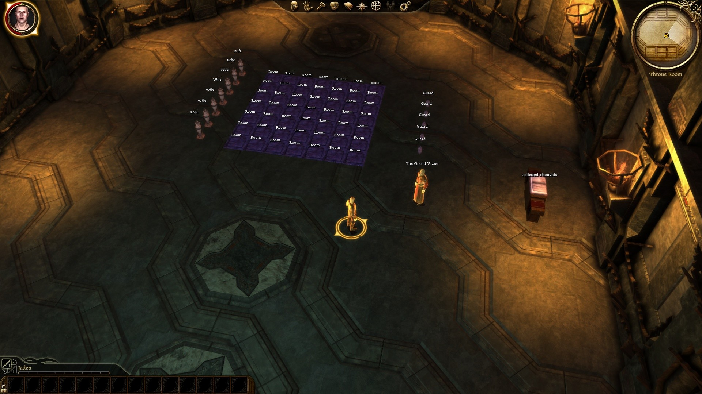
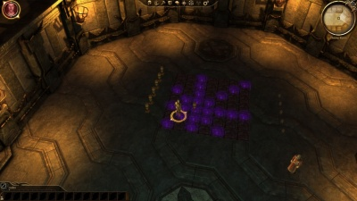
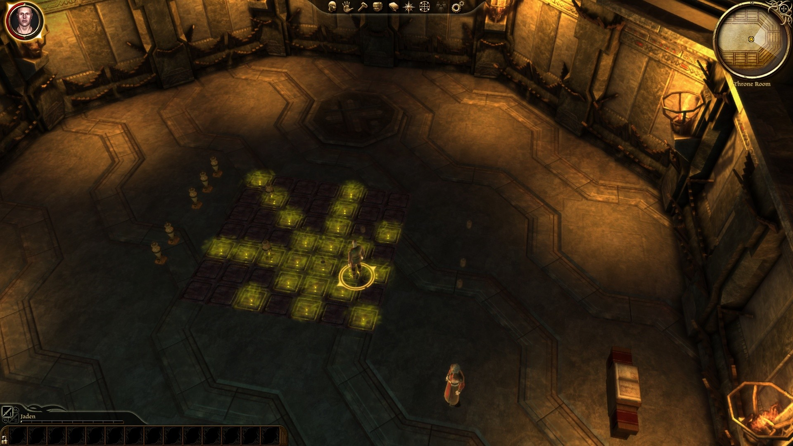

Community Contest 4: Minigame Script

Contents
Brief
Create a minigame or puzzle using scripting. The contest discussion thread can be found here.
DEADLINE: Monday 1 November - your entry must be ready for judging before midday GMT+0. It is strongly recommended you submit well before this time (sunday!) in case you run into troubles. Modifications to your submission are welcomed - the newest version of your entry will be judged, although modifications made after the submission date will not be judged.
Requirements
All entries must:
- Reserve and use a StringID range
- Be thoroughly tested in-game
- Be submitted in a single, playable area (the level will not be "marked")
- Include dadbdata export of all relevant resources
- Include a playable dazip of the mini-game - should be playable from the other campaigns menu
- Include a plain-text file detailing the mini-game implementation - the objective, customization options (if present) and solutions
- Use only DA assets (placeables, levels) unless the relevant files are included with the submission and author's permission has been given
- Be submitted before Monday 1 November midday (GMT+0)
Guidelines
Strong entries will:
- be easily adaptable to vary the minigame in other modules
- be unique and interesting
- use elegant and tidy scripting
- include well-written, detailed comments
- be well-designed and be free of bugs and discourage user error
- be significant as a piece of scripting: doing something new or expanding beyond the fundamentals of scripting
- make appropriate use of secondary resources (triggers, placeables, dialogues, floaty text, VFX, sound, etc)
Allowable
While no "bonus points" will be given for the following, entries may:
- use custom levels provided that the level is shared with the submission (.lvl and exported files)
Groups and Prizes
Groups
This contest has only one group.
- 1st place - 15 points, chooses first
- 2nd place - 10 points, chooses second
- 3rd place - 5 points, chooses third
- Best Newcomer - 3 points (unless 1st, 2nd or 3rd place)
- All other entries meeting requirements - 1 point
To receive an "entry point", your submission must meet the requirements of the contest, listed at the top of this page
Best Newcomer Award
Every judge may nominate one newcomer as their favourite newcomer entry. To qualify, the entrant must not have submitted to a community contest before. The winning newcomer will receive three points if they don't podium (in which case, theyll be getting more points anyway!).
Prizes
Please see Community Contest Prizes
Helpful Links
- Scripting Overview - Builder Wiki
- Scripting Tutorial - Builder Wiki
- Dragon Age Lexicon - Scripting Resource
Entries
For information on how to enter, please see the Entry FAQs
For information on Judging, please see the Judging page.
IMPORTANT - consent to share By entering this competition you consent to share your work for other community members to benefit from. Where appropriate, source files should be shared (dadbdata and any non-DA assets you have used including levels, props etc). The work *MUST* be your own (obviously you may use DA assets). Others may use and modify your work in their Dragon Age mods, though are encouraged to give credit. As the entries are judged, local copies will be saved If your work is taken down. If your work is taken down, you allow for it to be re-uploaded, crediting the work in your name.
Weighted RPS by Mengtzu - 1st Place
Rock, Paper, Scissors as a multi-round gambling game, with weighted moves to introduce strategy and customisable AI. Multiple games with different settings may share an area, allowing a tournament/festival style implementation, as demonstrated in the sample module. By default the player earns prize tokens which may be traded in for items.
Modular functions and constants make the engine easy to extend or modify.
{kind=link}
Judges' Comments
Helekanalaith
- The rock-paper-scissor scripts used by their respective placeables can be combined into a single script. This will remove the code duplication that currently exist. In order to execute each placeable's unique code, you can always check its tag -- this change will make the code easier to maintain in the future. And if you ever think about expanding each placeable's logic, you can simply create new functions for them in your function library.
+ Contains comments where necessary, making it easier to understand the relevant code. Not to mention that a full builder's guide is added in the "rps_h" file.
+ Separated the constants and functions into their own libraries.
+ Compact code if you ignore the spacing between lines.
+ Meaningful names for constants, functions and variables.
+ Came with an expansive ReadMe file.
The Cranky Harem by TimelordDC - 2nd Place
This module offers a customizable way of creating a single-area puzzle and is based on 2 classic chess problems - the 8-queen problem where you have to place 8 queen on a chess board so they don't attack each other and the queen-domination problem where you have to place the minimum number of queens in order to attack all squares (the minimum number has been relaxed for this game but you can change it) There are 5 different game modes:
- Place only the wives (n-queen problem)
- Place only the guards (domination problem)
- Place both (n-queen and domination)
- Place only guards with the additional condition that each guard doesn't attack another guard (domination problem with n-queen condition)
- Place both wives and guards with the additional condition that each guard doesn't attack another guard
There are also 5 different board sizes - 4 through 8, resulting in a total of 25 possible games.
Some sample scenarios to present the game in a non-chess fashion:
- The Cranky Harem as released on DANexus
- Tower defense where you have a set number of projectile traps that has to cover all possible entrances/pathways
- Bar/pub game where solving all 25 variations (or how many ever) is a small side-quest
  
{kind=link}
{kind=link}
{kind=link}
Judges' Comments
Helekanalaith
- An empty SWITCH-structure encased in an empty ELSE-structure's brackets serves no purpose. Probably code left behind while performing a clean-up?
+ Contains plenty of comments where necessary, making it easier to understand the relevant code.
+ Separated the constants and functions into their own files.
+ Compact code if you ignore the spacing between lines.
+ Meaningful names for constants, functions and variables.
+ Came with an expansive ReadMe file.
There's one particular block of code that had me rub my forehead. At the end of your functions library, you have two SWITCH-structures that are used to determine which logic to use for a particular harem size and difficulty setting. While I'm unable to come up with a better solution, I have to admit that seeing two SWITCH-structures like these leave me wondering if this can't be done in a better way.
The Doors of Death by Lobo - 3rd Place
This is a standalone module that contains a simple puzzle with doors.
There is a sequence of 4 doors that will lead you to the exit of the maze.
Each wrong choice will bring you back to the starting position, so you'll have to repeat the sequence again.
There is a little secret that you'll have to find out to solve the puzzle :)
{kind=link}
Judges' Comments
Helekanalaith
- Using a SWITCH-structure with a single CASE-block seems a bit of an overkill. Personally I'd do away with it and replace that with an IF-structure.
+ Contains plenty of comments where necessary, making it easier to understand the relevant code.
+ Separated the constants and functions into its own library. I would suggest to split the constants from the functions, though, and move them into their own library file.
+ Compact code with no empty blocks.
+ Meaningful names for constants, functions and variables.
+ Came with an expansive ReadMe file.
I have a small refactoring suggestion for the code found in file "dod_utils_h".
OLD CODE
int i = 0;
while (i < nTotalFlags)
{
if (i == 0 && !bFullReset)
{
WR_SetPlotFlag(sPlot, i, TRUE);
}
else
{
WR_SetPlotFlag(sPlot, i, FALSE);
}
i++;
}
NEW CODE
int i;
for (i = 0; i < nTotalFlags; i++)
{
int bResetPlot = i == 0 && !bFullReset;
WR_SetPlotFlag(sPlot, i, bResetPlot);
}
Sunjammer: I didn't judge this competition but I think it is necessary to mention a larger issues which has been overlooked. In both examples, assuming the logic is correct, the majority of the conditional code is superfluous. Specifically since the AND condition can only ever be true in when i == 0 testing the condition in all subsequent cases is redundant. Refactored, the code should look more like this:
Although the above code appears more verbose it is more efficient and it should be more easily understood (even without the comments) and therefore is easier to maintain.
There is, however, still a question mark over the first flag as it may be unnecessary to set it where bFullReset is false. If this is the case the following variation should be used:
int nFlag; // resetting first flag is conditional: a partial reset does not reset the first flag if(bFullReset) { WR_SetPlotFlag(sPlot, 0, FALSE); } // resetting subsequent flags is unconditional: they are always reset for(nFlag = 1; nFlag < nTotalFlags; nFlag++) { WR_SetPlotFlag(sPlot, nFlag, FALSE); }
Nug Chase by Bloodsong - Best Newcomer
A simple action-oriented mini-game for players of any level. Granny Rockbottom's prize Racing Nug has escaped his pen, and you need to catch him. To do this, you need to click on the nug and get close enough to initate a conversation. If you are successful, you catch the pesky nug. If not, hilarity ensues. :X
Includes a custom Nug Wallows area/level, and a convoluted conversation tree with the NPC. Rewards are small gifts, some XP, and possibly a small amount of cash. Documentation for customizing also included.
{kind=link}
Please report any file/installation problems here:
Judges' Comments
Helekanalaith
- Was unable to review the code because the B2B file was empty?
+ Came with an expansive ReadMe file.
Most fun to play and was the only module that featured voice acting. Nice level design as well
Assembly by mikemike37
Including this in your mod allows you to create recipes which the player uses three new skills to complete: work, combine and separate. The player places the items on a placeable in your module, and performs the action. If it meets one of the recipes defined in the easy-to-modify 2das, new items are created.
The sample usage includes an area with the ingredients and GDAs with the recipe for... nug soup!
example usage:
- reassemble an ancient artifact in a dungeon's forge
- combine and separate coloured gems to open coloured doors
- place in smithy to allow the player to upgrade their equipment using special crafting recipes
To use:
- add the GDAs to your module's override
- modify them to create your own recipes with your own items (very straightforward)
- add one or more of the assembly placeables to your area
- surround the placeables with the assembly trigger
- that's it!
Judges' Comments
Helekanalaith:
- Several IF-structures make use of the same blocks of code in their conditions. For maintainability and readability's sake I'd make a function for this code that returns a value and expects the required parameters.
- Variables that are declared but never used leave an unnecessary footprint in the runtime memory, my suggestion is to remove unused variables. (i.e. VAR BLOCK starting on line 100 in "cc_mk_assemblyability")
- No ReadMe file.
+ Contains enough comments for a scripter to use the code.
+ Meaningful names for constants, functions and variables.
Instead of putting debugging code in comments you can always make use of the "#ifdef DEBUG" directive. That way your code won't be cluttered with green, soon-to-be-deleted text.
Creating separate libraries for your constants and functions is always handy. You never know if you ever plan on expanding your scripts in the future.